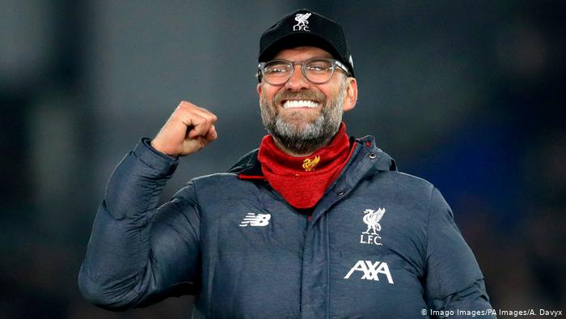

De basis 11 die ik nu laat zien. Is de basis 11 die het vaakst word gebruikt als er geen blessures bij zijn. basis 11: Alisson(keeper) verdediging: N. Williams,Matip, R. Williams en Virgil van Dijk Middenveld: Jones, Wijnaldum, Milner Aanval: Salah, Firmino, Mané. Met Coach: Jürgen Klopp

